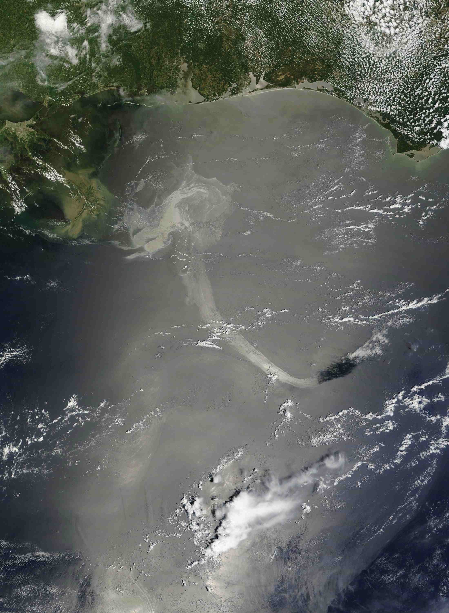

Because alkanes have relatively predictable physical properties and undergo relatively few chemical reactions other than combustion, they serve as a basis of comparison for the properties of many other organic compound families. Let’s consider their physical properties first.
Table 12.5 "Physical Properties of Some Alkanes" describes some of the properties of some of the first 10 straight-chain alkanes. Because alkane molecules are nonpolar, they are insoluble in water, which is a polar solvent, but are soluble in nonpolar and slightly polar solvents. (For more information about solubility, see Chapter 9 "Solutions", Section 9.2 "Concentration".) Consequently, alkanes themselves are commonly used as solvents for organic substances of low polarity, such as fats, oils, and waxes. Nearly all alkanes have densities less than 1.0 g/mL and are therefore less dense than water (the density of H2O is 1.00 g/mL at 20°C). These properties explain why oil and grease do not mix with water but rather float on its surface.
Table 12.5 Physical Properties of Some Alkanes
| Molecular Name | Formula | Melting Point (°C) | Boiling Point (°C) | Density (20°C)* | Physical State (at 20°C) |
|---|---|---|---|---|---|
| methane | CH4 | –182 | –164 | 0.668 g/L | gas |
| ethane | C2H6 | –183 | –89 | 1.265 g/L | gas |
| propane | C3H8 | –190 | –42 | 1.867 g/L | gas |
| butane | C4H10 | –138 | –1 | 2.493 g/L | gas |
| pentane | C5H12 | –130 | 36 | 0.626 g/mL | liquid |
| hexane | C6H14 | –95 | 69 | 0.659 g/mL | liquid |
| octane | C8H18 | –57 | 125 | 0.703 g/mL | liquid |
| decane | C10H22 | –30 | 174 | 0.730 g mL | liquid |
| *Note the change in units going from gases (grams per liter) to liquids (grams per milliliter). Gas densities are at 1 atm pressure. | |||||
Figure 12.5 Oil Spills
Crude oil coats the water’s surface in the Gulf of Mexico after the Deepwater Horizon oil rig sank following an explosion. The leak was a mile below the surface, making it difficult to estimate the size of the spill. One liter of oil can create a slick 2.5 hectares (6.3 acres) in size. This and similar spills provide a reminder that hydrocarbons and water don’t mix.
Source: Photo courtesy of NASA Goddard / MODIS Rapid Response Team, http://www.nasa.gov/topics/earth/features/oilspill/oil-20100519a.html.
Table 12.5 "Physical Properties of Some Alkanes" indicates that the first four members of the alkane series are gases at ordinary temperatures. Natural gas is composed chiefly of methane, which has a density of about 0.67 g/L. The density of air is about 1.29 g/L. Because natural gas is less dense than air, it rises. When a natural-gas leak is detected and shut off in a room, the gas can be removed by opening an upper window. On the other hand, bottled gas can be either propane (density 1.88 g/L) or butanes (a mixture of butane and isobutane; density about 2.5 g/L). Both are much heavier than air (density 1.2 g/L). If bottled gas escapes into a building, it collects near the floor. This presents a much more serious fire hazard than a natural-gas leak because it is more difficult to rid the room of the heavier gas.
As shown in Table 12.5 "Physical Properties of Some Alkanes", the boiling points of the straight-chain alkanes increase with increasing molar mass. This general rule holds true for the straight-chain homologs of all organic compound families. Larger molecules have greater surface areas and consequently interact more strongly; more energy is therefore required to separate them. For a given molar mass, the boiling points of alkanes are relatively low because these nonpolar molecules have only weak dispersion forces to hold them together in the liquid state.
An understanding of the physical properties of the alkanes is important in that petroleum and natural gas and the many products derived from them—gasoline, bottled gas, solvents, plastics, and more—are composed primarily of alkanes. This understanding is also vital because it is the basis for describing the properties of other organic and biological compound families. For example, large portions of the structures of lipids consist of nonpolar alkyl groups. Lipids include the dietary fats and fatlike compounds called phospholipids and sphingolipids that serve as structural components of living tissues. (For more information about lipids, see Chapter 17 "Lipids".). These compounds have both polar and nonpolar groups, enabling them to bridge the gap between water-soluble and water-insoluble phases. This characteristic is essential for the selective permeability of cell membranes.
Tripalmitin (a), a typical fat molecule, has long hydrocarbon chains typical of most lipids. Compare these chains to hexadecane (b), an alkane with 16 carbon atoms.
Without referring to a table, predict which has a higher boiling point—hexane or octane. Explain.
If 25 mL of hexane were added to 100 mL of water in a beaker, which of the following would you expect to happen? Explain.
octane because of its greater molar mass
b; hexane is insoluble in water and less dense than water.
Without referring to a table or other reference, predict which member of each pair has the higher boiling point.
For which member of each pair is hexane a good solvent?